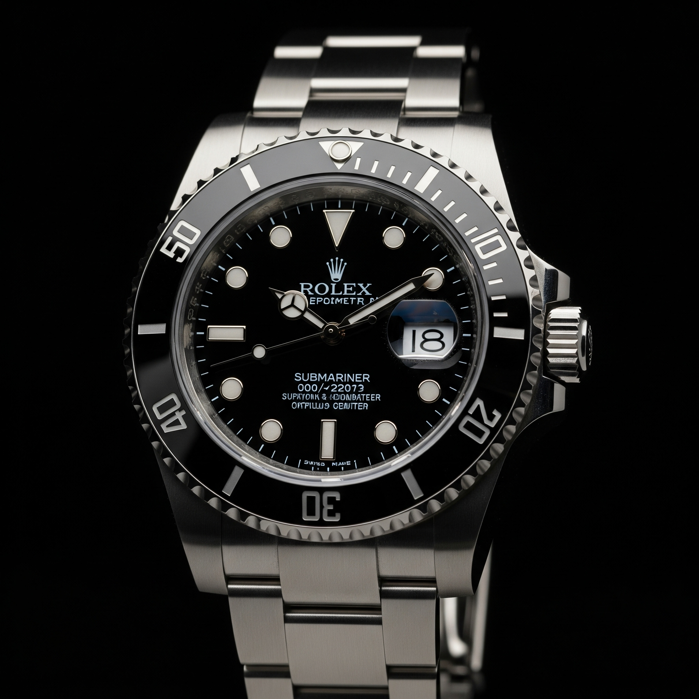
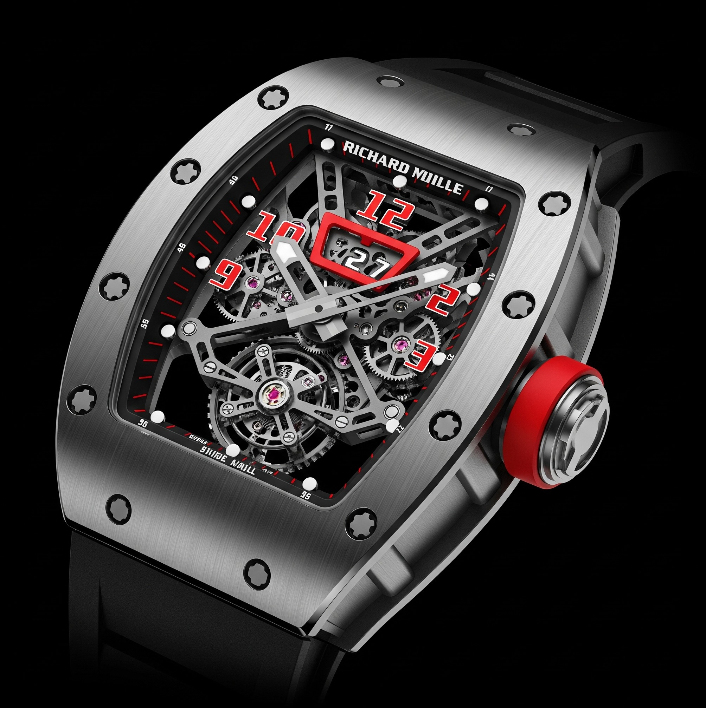

Rolex Submariner
Nel 1953, quando viene lanciato, il Submariner di Rolex è il primo orologio da polso subacqueo impermeabile fino a 100 metri di profondità.

Cartier Tank
L'orologio Cartier Tank, un simbolo di eleganza senza tempo, nasce nel 1917 dalla mente di Louis Cartier, ispirato alla forma dei carri armati visti durante la Prima Guerra Mondiale
RM 27 Tourbillon Rafael Nadal
rappresenta una pietra miliare nella collaborazione tra Richard Mille e il tennista spagnolo, con una serie di orologi che continuano a stupire per leggerezza, resistenza e innovazione

Audemars Piguet Royal Oak
è un orologio da polso iconico, noto per il suo design innovativo e la sua costruzione di alta qualità. Progettato da Gérald Genta, è stato lanciato nel 1972 e ha rivoluzionato il mondo dell'orologeria con il suo design sportivo e la sua combinazione di materiali pregiati, come l'acciaio inox
Omega Speedmaster Professional
è un orologio cronografo iconico, noto soprattutto per essere stato il primo orologio indossato sulla luna, durante la missione Apollo 11
Patek Philippe Nautilus
è un orologio di lusso sportivo in acciaio, noto per il suo design iconico e la sua storia. Introdotto nel 1976, è stato progettato da Gérald Genta e ha rivoluzionato il mondo dell'orologeria, introducendo il concetto di orologio sportivo di lusso in acciaio